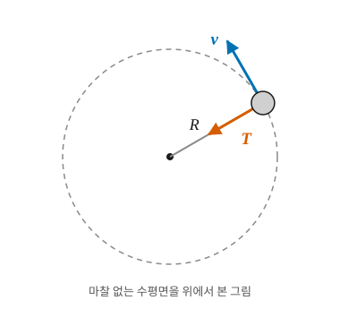

← 목차
등속 원운동의 힘 (uniform circular motion)
반지름
인 원을 일정한 속력
로 돌려면 원의 중심을 향하는 알짜힘이 있어야 한다. 이 힘을
구심력 (centripetal force)
이라 한다.
(6.3.2)
가속도
(6.3.1)과 힘은 둘 다 원의 중심을 향한다.
구심력은 새로운 종류의 힘이 아니다. 줄의 장력, 중력, 마찰력처럼 이미 있는 힘이 그 방향으로 작용하는 것을 부르는 이름이다.
